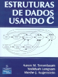
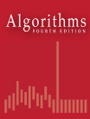
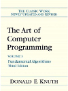

Algoritmos e Estruturas de dados
Contato
- Jean Paulo Martins (jeanmartins utfpr edu br)
- Sala 105, Bloco S (UTFPR - Campus Pato Branco)
Conteúdo
- Motivação para a disciplina
- Escopo e objetivos
- Por que não utilizar as estruturas já vistas?
- Plano de aulas
Motivação para a disciplina
-
Algoritmos e Estruturas de Dados é o primeira conteúdo de substância em programação
-
Inicia-se o aprendizado de como abstrair conceitos reais no computador
- Qual motivação para exemplificar?
- Redes complexas: network science, complex networks
-
Dar alguns exemplos e analisar como eles poderiam ser armazenados na memória
- Matrizes esparsas: 2m00s (Sistemas complexos em geral, pássaros)
- Emergencia: 6m06s (Cardume de peixes, redes de neurônios)
- Redes sociais: 1m15s (redes sociais, em geral)
- Scale-free: 1m44s (Seis graus de separação)
-
Consequências dos hubs como influência:
-
3.5 degrees of separation facebook
-
Publicidade
-
Google PageRank
-
Vacinação, imunização
-
Resiliência (rede computadores)
-
Escopo e objetivos
-
Estrutras de dados lineares
-
Compreender os pontos fortes e fracos de cada estrutura de dados em termos de:
-
Eficiência de tempo
-
Eficiência de uso de memória
-
Trade-off
-
Nesse contexto, ser capaz de avaliar:
- Qual estrutura de dados utilizar em determinada situação
-
Por que não utilizar as estruturas já vistas?
-
Quais a dificuldades de utilizar as estruturas já vistas?
-
heterogêneas,
-
homogêneas,
-
dinâmicas
-
-
Como solucionar isso:
-
structs,
-
unions,
-
alocação dinâmica
-
encadeamento,
-
-
Por que eu aprender a implementar essas estruturas?
-
Entender o funcionamento permite escolher a mais adequada,
-
Eficiência no uso de tempo e memória.
-
-
Grande diferencial entre programadores “amadores”, essa falta de entendimento, do que acontece.
Plano de aulas
-
Resumo do conteúdo PDF
-
Relacionar às estruturas de dados em C++ STL
-
Utilizar os mesmos nomes de estruturas que em STL
- Facilitará o aprendizado introdutório das estruturas C++
-
-
APS e provas (datas)
-
Questões de prova deverão ser solucionadas e testadas no Hackerrannk: AE22CP-17/2
-
Concluída as implementações, os códigos a serem avaliados deverão ser submetidos no moodle:
- Algoritmos e Estruturas de Dados
-
Somente códigos submetidos no moodle serão avaliados.
-
Detector de plágios será utilizado para verificar os códigos submetidos
- Cópias detectadas e não justificadas receberão nota zero.
-
Questões de APS
-
Livros principais
  